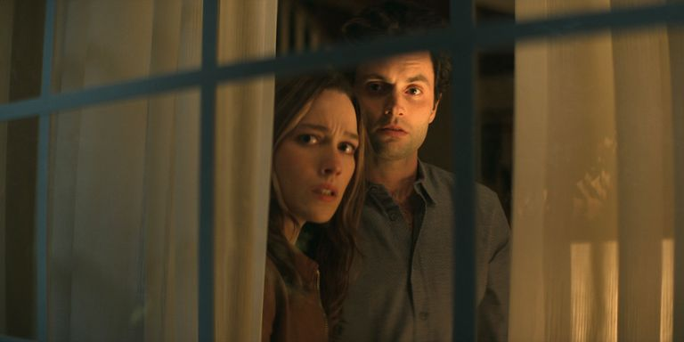
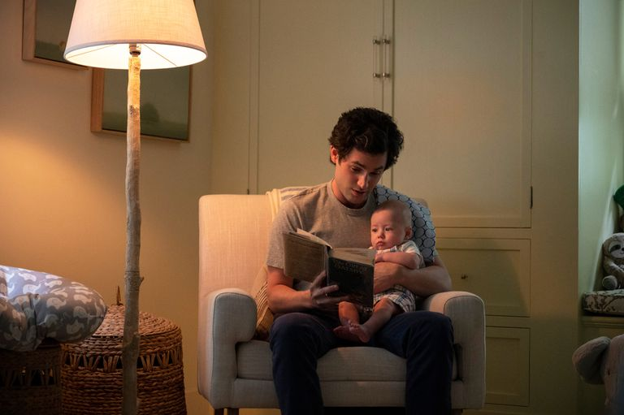
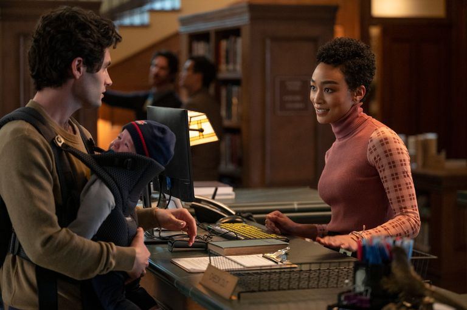

'You': ¿Qué le espera a Joe en la temporada 4 de la serie?
"No queremos hacer lo mismo dos veces", ha dicho la showrunner de la serie de Netflix sobre el futuro del personaje interpretado por Penn Badgley.
'You, el drama de Netflix, ha sorprendido y cautivado a los espectadores esta semana, pero la showrunner Sara Gamble se ha adelantado un poco y ha hablado sobre lo que la cuarta temporada puede ofrecer en el futuro.
La tercera temporada de 'You', que llegó a Netflix la semana pasada (15 de octubre), nos mostró a Joe (Penn Badgley) una vez más escapando del lío sangriento que había creado él mismo como un subproducto de su obsesión con otra mujer que sale ilesa (aparte de unos pocos dedos de los pies). Habiendo matado ahora a diez residentes en tres ciudades distintas (Nueva York, Los Ángeles y el suburbio de Madre Linda en California), ha dicho que su próxima parada sería al otro lado del charco, en París.
Con su esposa Love (Victoria Pedretti) muriendo en el final de la temporada 3 de 'You', su hijo Henry en las capaces manos de su ex compañero de trabajo Dante (Ben Mehl) y su esposo Lansing (Noel Arthur), y su última obsesión Marienne (Tati Gabrielle) en paradero desconocido, ¿qué le espera a Joe a continuación?
La serie ya ha sido renovada para una cuarta temporada, y la showrunner Sara Gamble les ha dicho a los espectadores qué pueden esperar de la próxima entrega. "Siento que la tercera temporada es una temporada de una gran cantidad de pérdidas y tragedias para él", ha contado en una entrevista con Collider. "Y lo dejamos tras haber perdido o haber sentido que tenía que dejar ir todo lo que realmente le importaba.
La serie ya ha sido renovada para una cuarta temporada, y la showrunner Sara Gamble les ha dicho a los espectadores qué pueden esperar de la próxima entrega. "Siento que la tercera temporada es una temporada de una gran cantidad de pérdidas y tragedias para él", ha contado en una entrevista con Collider. "Y lo dejamos tras haber perdido o haber sentido que tenía que dejar ir todo lo que realmente le importaba.
"Entonces la historia a partir de aquí de aquí, si es que podemos contarla, será sobre cómo el protagonista recupera algo de eso o cómo encuentra algo más, porque si el Joe que conociste en la primera escena del piloto, donde suena la campana en el librería y entra la chica de los pantalones vaqueros, si entonces tenía un agujero que necesitaba llenar en su corazón, ahora tiene como 17."
"Ahora llevamos más tiempo con él, así que sabemos más sobre su bagaje personal y emocional, ¿no? Creo que hay mucho de eso por explorar". La tercera temporada vio a Joe enamorarse de su esposa Love, y rápidamente se obsesionó primero con su rica vecina Natalie y finalmente con su colega de biblioteca Marienne.
Gamble explicó que con cada nuevo interés amoroso, los guionistas intentan crear diferentes razones por las que Joe se sentiría atraído por esas personas. "No queremos sentir que estamos haciendo lo mismo dos veces", ha dicho. "Y así, para cada personaje que entra en el círculo de Joe, pasamos por un proceso bastante riguroso de tratar de pensar realmente en alguien muy diferente y descubrir qué podemos explorar que no hayamos hecho aún".
El destino de Marienne aún es todo un misterio, pero, dados los desenlaces de Beck, Love y Natalie, igual nos hacemos una idea.
